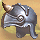
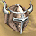
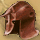

圖示產品名重量等級需求工作經驗商店售價需要原料
小圓盔401258青銅塊 2 羊皮 1
青銅盔455368青銅塊 2 羊皮 2
圓盔50105109銅塊 2 牛皮 2
銅盔55157135銅塊 3 牛皮 1
鐵盔60208144鐵塊 2 鹿皮 1
鐵面具752510187鐵塊 3 鹿皮 1
 銀盔703012284銀塊 2 銅塊 2 貂皮 1
角盔703513307鐵塊 3 銀塊 1 象牙 1
鋼盔704015438鋼塊 2 銅塊 1 象牙 1
白銀角盔804517527鋼塊 2 銀塊 2 象牙 1
武士面具805018615鋼塊 2 金塊 2 犀牛皮 1
 精鋼戰盔1005520731鋼塊 4 鱷魚皮 1
 虎牙戰盔1206022868鋼塊 4 虎皮 2
黃金角盔806523891金塊 3 鋼塊 3 犀角 1
白金戰盔8070251097白金塊 2 鋼塊 1 虎皮 1
龍鱗戰盔120| 75 | | | | | | | | | | | | | | | | | | | | | | | | | | | | | | | | | | | | | | | | | | | | | | | | | | | | | | | | | | | | | | | | | | | | | | | | | | | | | | | | | | | | | | | | | | | | | | | | | | | | | | | | | | | | | | | | | | | |